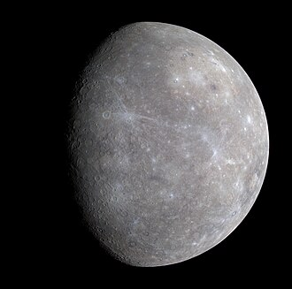

Mercur
Mercur este planeta cea mai apropiată de Soare, înconjurându-l o dată la fiecare 88 de zile pământene. Luminozitatea sa variază între -2,0 și 5,5 în magnitudine aparentă, dar nu este ușor de văzut fiindcă cea mai mare separare unghiulară (cea mai mare elongație) față de Soare este de doar 28,3°, însemnând că se poate vedea doar imediat după apusul Soarelui. În perioada 1974 - 1975, Mercur a fost studiată cu ajutorul sondei Mariner 10, care a cartografiat doar 40 - 45 % din suprafața planetei. Începând din 2011, sonda spațială MESSENGER orbitează în jurul planetei pentru a studia compoziția chimică, geologia și câmpul magnetic.